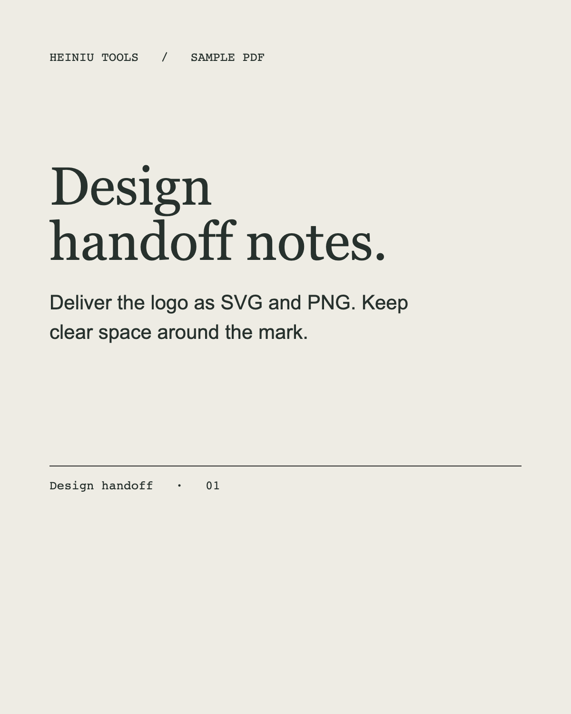
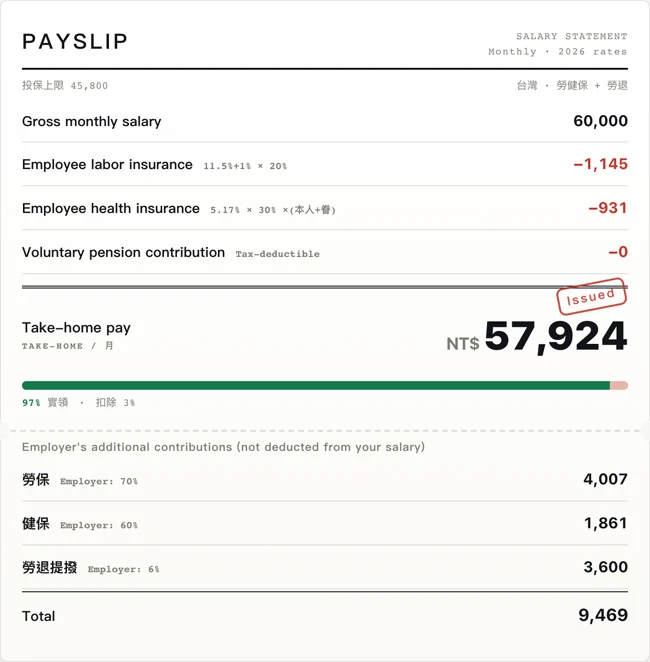
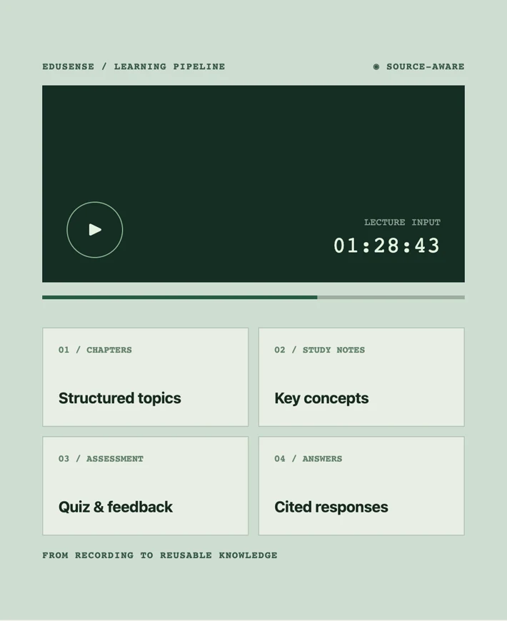
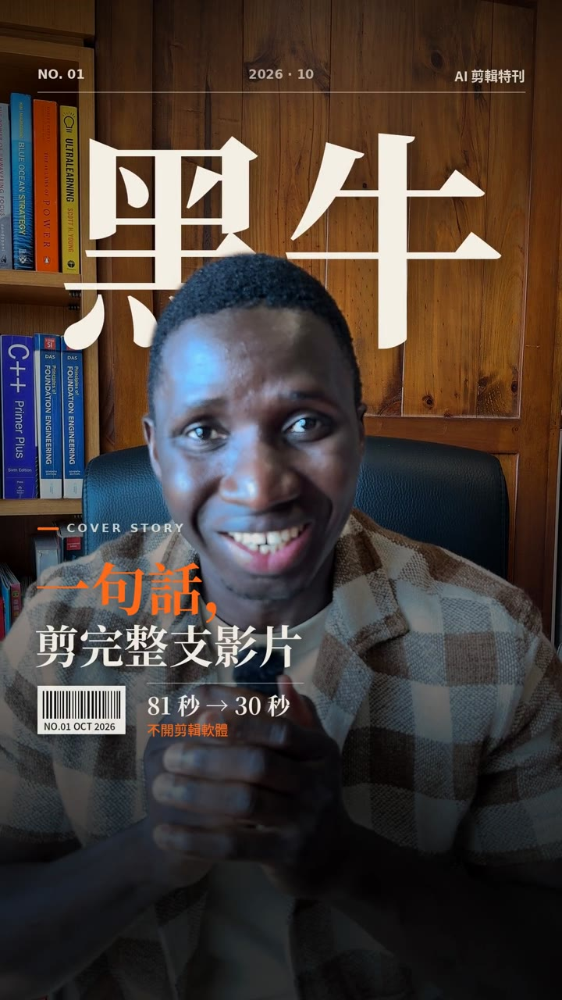

PDFPDF 文字擷取PDF text extractor

範例 PDF · 第 1 頁Sample PDF · Page 1
Deliver the logo as SVG and PNG. Keep clear space around the mark.
 Abdoulie Fatty, PhD · 黑牛
Abdoulie Fatty, PhD · 黑牛使用我做的工具，看看我的 AI 應用與研究作品，或跟著教學學會一個新的工作流程。Use the tools I build, explore my AI applications and research, or learn a workflow step by step.

薪資試算範例Sample pay calculation整理檔案、估算實領薪資，或看看錢都花到哪裡。Sort files, estimate take-home pay or review your spending.

EduSense · 學習流程圖EduSense · Learning workflow探索 EduSense、StrideBrain、顧問教練系統與發表的研究。Explore EduSense, StrideBrain, Consultation Coach and published research.

AI 影片剪輯教學AI video editing lesson學 Claude、跟 AI 剪影片，或用 ASTRA 做一間茶鋪。Learn Claude, edit video with AI or build a tea shop with ASTRA.
從檔案到成品，選一件事開始。From source files to finished work. Choose a task to start.
檔名像是活動流程，內容卻是 SVG、PNG 與留白規範，屬於設計素材交付。The filename suggests an event plan. The PDF describes SVG and PNG assets and clear-space rules for a design handoff.

Deliver the logo as SVG and PNG. Keep clear space around the mark.
從 AI 產品與知識系統，到電腦視覺與行動機器學習。From AI products and knowledge systems to computer vision and mobile machine learning.
將課程錄影整理成章節、筆記、複習題與來源導向問答的 AI 學習產品。An AI learning product designed to organize lecture recordings into chapters, notes, practice questions and source-aware answers.
教育 AI · 產品案例Education AI · Product case studyStrideBrain讓設計與裝修團隊連結專案紀錄、報價與經過人工審核的決策。A knowledge system for design and renovation teams, connecting project records and quotes to human-reviewed decisions.
v0.1 端到端原型v0.1 vertical sliceConsultation Coach協助台灣教育機構的顧問準備諮詢，並在會後獲得教練回饋。A production coaching system for a Taiwanese education provider, supporting consultation preparation and feedback.
PrimeStride AIPrimeStride AI已發表的研究介紹兩款以循環神經網路進行岩坡安全評估的 iOS 應用程式。Published research describes two RNN-based iOS applications for rock slope safety assessment.
多光譜空拍影像的建物實例分割 · 2024 年論文Multispectral building segmentation · 2024 paper閱讀已發表的論文Read the published papers跟著黑牛的示範，用 Claude 把原始素材剪成有字幕的短片。Follow Abdoulie’s demo and use Claude to turn raw footage into a captioned short video.
看剪輯教學Open the editing guide